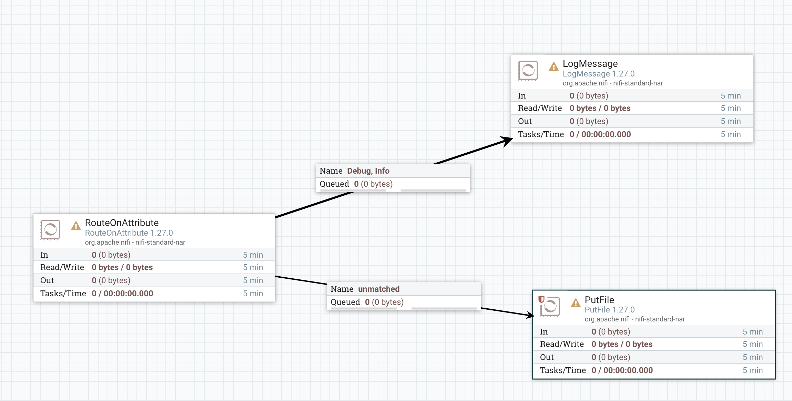
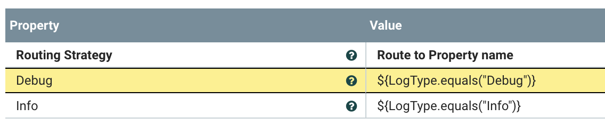
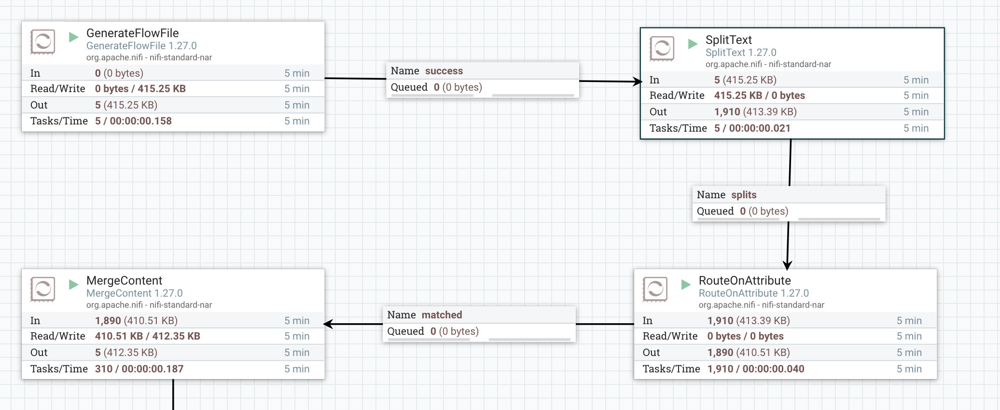
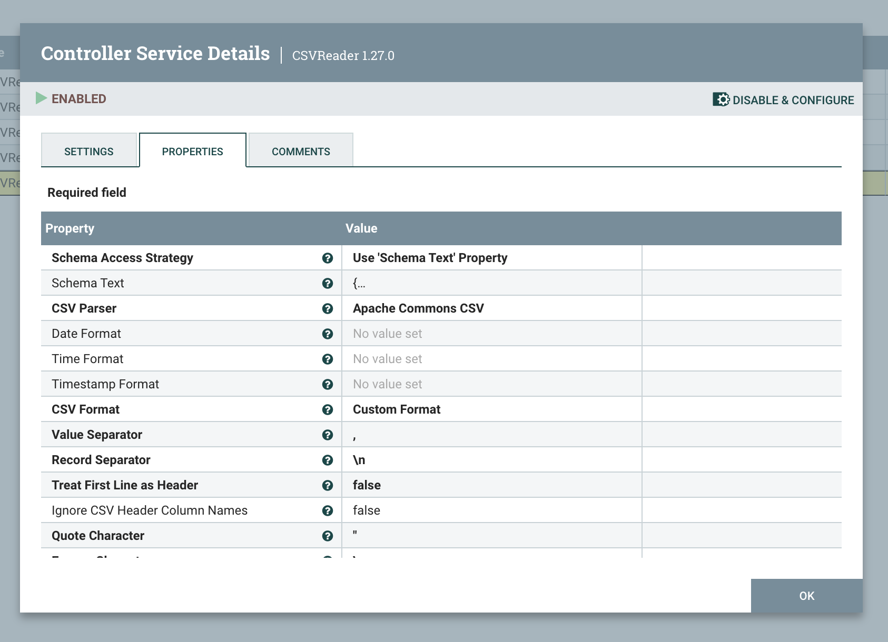
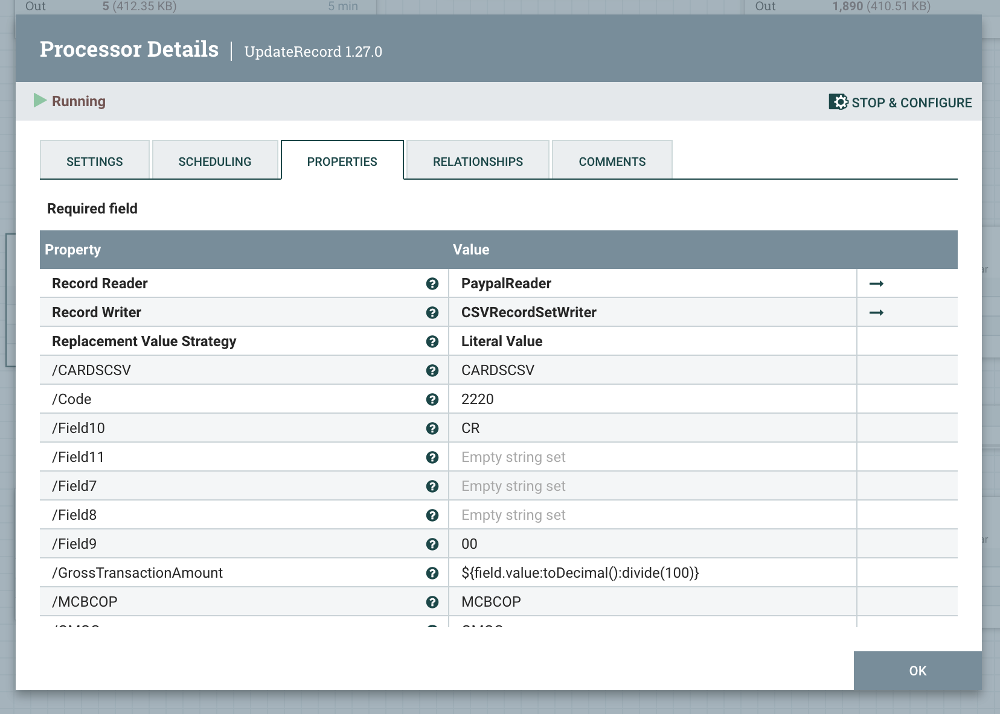
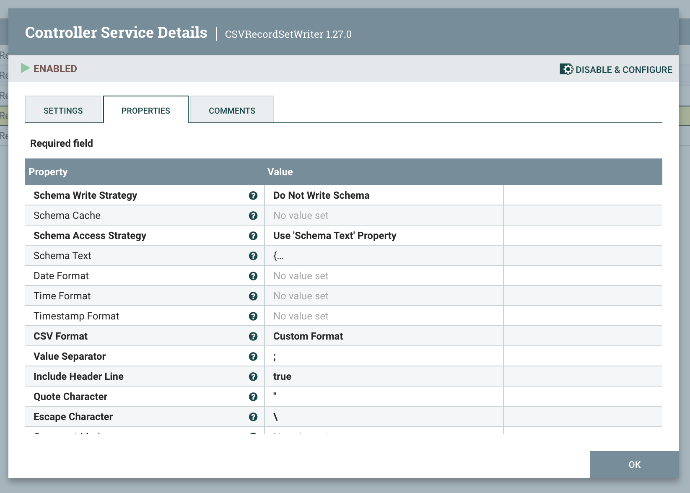
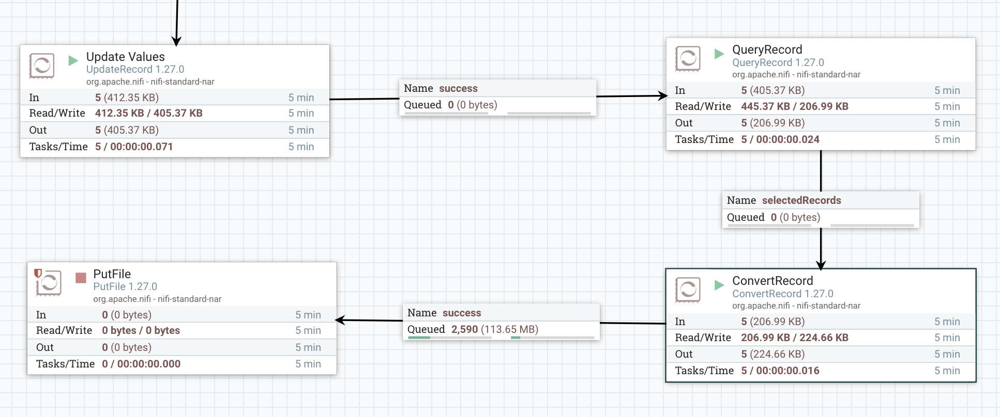

<!DOCTYPE html>


<html lang="en">
  

    <head>
      <meta charset="utf-8" />
       
      <meta name="keywords" content="agile, tdd, software engineering" />
       
      <meta
        name="viewport"
        content="width=device-width, initial-scale=1, maximum-scale=1"
      />
      
        <meta property="og:image" content="NifiLogo.png"/>
        <meta property="og:description" content="We are currently using a proprietary ETL tool. Whilst it is very capable, skills and support in the market are scarce. I wanted to see what Open Source alternatives are available and see if they could be used to simplify some of our ETL flows."/>
        
      <title>Adventures in Nifi |  nick dot blog</title>
  <meta name="generator" content="hexo-theme-ayer">
      
      <link rel="shortcut icon" href="/favicon.ico" />
       
<link rel="stylesheet" href="/dist/main.css">

      
<link rel="stylesheet" href="/css/fonts/remixicon.css">

      
<link rel="stylesheet" href="/css/custom.css">
 
      <script src="https://cdn.staticfile.org/pace/1.2.4/pace.min.js"></script>
       
<!-- Global site tag (gtag.js) - Google Analytics -->
<script async src="https://www.googletagmanager.com/gtag/js?id=G-KXJW9BVBJ4"></script>
<script>
  window.dataLayer = window.dataLayer || [];
  function gtag(){dataLayer.push(arguments);}
  gtag('js', new Date());
  gtag('config', 'G-KXJW9BVBJ4');
</script>

 

      <link
        rel="stylesheet"
        href="https://cdn.jsdelivr.net/npm/@sweetalert2/theme-bulma@5.0.1/bulma.min.css"
      />
      <script src="https://cdn.jsdelivr.net/npm/sweetalert2@11.0.19/dist/sweetalert2.min.js"></script>

      <!-- mermaid -->
      
      <style>
        .swal2-styled.swal2-confirm {
          font-size: 1.6rem;
        }
      </style>
    <link rel="alternate" href="/atom.xml" title="nick dot blog" type="application/atom+xml">
</head>
  </html>
</html>


<body>
  <div id="app">
    
      
    <main class="content on">
      <section class="outer">
  <article
  id="post-nifi"
  class="article article-type-post"
  itemscope
  itemprop="blogPost"
  data-scroll-reveal
>
  <div class="article-inner">
    
    <header class="article-header">
       
<h1 class="article-title sea-center" style="border-left:0" itemprop="name">
  Adventures in Nifi
</h1>
 

      
    </header>
     
    <div class="article-meta">
      <a href="/2024/09/04/nifi/" class="article-date">
  <time datetime="2024-09-04T10:50:40.000Z" itemprop="datePublished">2024-09-04</time>
</a> 
  <div class="article-category">
    <a class="article-category-link" href="/categories/ETL/">ETL</a>
  </div>
  
<div class="word_count">
    <span class="post-time">
        <span class="post-meta-item-icon">
            <i class="ri-quill-pen-line"></i>
            <span class="post-meta-item-text"> Word count:</span>
            <span class="post-count">1.4k</span>
        </span>
    </span>

    <span class="post-time">
        &nbsp; | &nbsp;
        <span class="post-meta-item-icon">
            <i class="ri-book-open-line"></i>
            <span class="post-meta-item-text"> Reading time≈</span>
            <span class="post-count">8 min</span>
        </span>
    </span>
</div>
 
    </div>
      
    <div class="tocbot"></div>


  
    <div class="article-entry" itemprop="articleBody">
       
  <p>We are currently using a proprietary ETL tool. Whilst it is very capable, skills and support in the market are scarce. I wanted to see what Open Source alternatives are available and see if they could be used to simplify some of our ETL flows. A cursory search revealed a few names and after some more reading I decided to give <a target="_blank" rel="noopener" href="https://nifi.apache.org/">Apache Nifi</a> a go.</p>
<h1 id="What-is-Nifi"><a href="#What-is-Nifi" class="headerlink" title="What is Nifi?"></a>What is Nifi?</h1><p>Nifi allows you to build data pipelines using a graphical environment. The pipelines are created by connecting a series of Processors. Each Processor is responsible for performing some action on the data. This could be anything from reading from a Log to sorting, filtering or outputting files. </p>
<p>Processors expose a set of properties that allows you to control their operation. Where you need to be more specific an Expression Language is used. </p>
<p>That’s the basics. Behind the scenes Nifi takes care of security, data provenance, scaling, persistence, retry semantics etc.</p>
<p>Here’s a simple example:</p>
<p>Assume we are reading from a Log and we want to Route ‘Info’ and ‘Debug’ messages to Nifi’s own logs but write everything else to a separate file. </p>
<p>This is what it looks like:</p>


<p>We add a <em>RouteOnAttribute</em> Processor and configure it with the following rules:</p>


<p>This creates 3 outputs from the Processor: Debug, Info and Unmatched. </p>
<p>We connect the Debug and Into outputs to the <em>LogMessage</em> Processor and the Unmatched output to the <em>PutFile</em> Processor.</p>
<p>Job done.</p>
<h1 id="What-do-we-need"><a href="#What-do-we-need" class="headerlink" title="What do we need?"></a>What do we need?</h1><p>As with any tool it’s important to start by understanding what capabilities one requires. In our case we need to:</p>
<ul>
<li>Parse CSV and Fixed-width files.</li>
<li>Convert data to XML and JSON.</li>
<li>Handle various data-encodings.</li>
<li>Filter incoming data.</li>
<li>Support a variety of input and output adapters.</li>
</ul>
<h1 id="POC-scenario"><a href="#POC-scenario" class="headerlink" title="POC scenario"></a>POC scenario</h1><p>To put Nifi through its paces I selected an example from our Paypal Reconciliation flow. We receive a summary of Paypal transactions in CSV format and need to convert it into a delimited Swift format. In the process we need to apply some rules to extract only certain messages and apply some specific format rules.</p>
<h1 id="Setup"><a href="#Setup" class="headerlink" title="Setup"></a>Setup</h1><p>You can get Nifi running locally in Docker using the following:</p>
<figure class="highlight plaintext"><table><tr><td class="gutter"><pre><span class="line">1</span><br><span class="line">2</span><br><span class="line">3</span><br><span class="line">4</span><br><span class="line">5</span><br><span class="line">6</span><br></pre></td><td class="code"><pre><span class="line">docker run --name nifi \</span><br><span class="line">  -p 8443:8443 \</span><br><span class="line">  -d \</span><br><span class="line">  -e SINGLE_USER_CREDENTIALS_USERNAME=admin \</span><br><span class="line">  -e SINGLE_USER_CREDENTIALS_PASSWORD=password \</span><br><span class="line">  apache/nifi:latest</span><br></pre></td></tr></table></figure>

<h1 id="Parse-the-CSV"><a href="#Parse-the-CSV" class="headerlink" title="Parse the CSV"></a>Parse the CSV</h1><p>This is what the incoming data looks like:</p>
<figure class="highlight plaintext"><table><tr><td class="gutter"><pre><span class="line">1</span><br><span class="line">2</span><br><span class="line">3</span><br><span class="line">4</span><br><span class="line">5</span><br><span class="line">6</span><br></pre></td><td class="code"><pre><span class="line">&quot;RH&quot;,2024/08/21 02:44:19 -0700,&quot;A&quot;,&quot;**********&quot;,009,</span><br><span class="line">&quot;FH&quot;,01</span><br><span class="line">&quot;SH&quot;,2024/08/20 00:00:00 -0700,2024/08/20 23:59:59 -0700,&quot;&quot;,&quot;**********&quot;,&quot;,&quot;&quot;</span><br><span class="line">&quot;CH&quot;,&quot;Transaction ID&quot;,&quot;Invoice ID&quot;,&quot;PayPal Reference ID&quot;,&quot;PayPal Reference ID Type&quot;,&quot;Transaction Event Code&quot;,&quot;Transaction Initiation Date&quot;,&quot;Transaction Completion Date&quot;,&quot;Transaction Debit or Credit&quot;,&quot;Gross Transaction Amount&quot;,&quot;Gross Transaction Currency&quot;,&quot;Fee Debit or Credit&quot;,&quot;Fee Amount&quot;,&quot;Fee Currency&quot;,&quot;Custom Field&quot;,&quot;Consumer ID&quot;,&quot;Payment Tracking ID&quot;,&quot;Store ID&quot;,&quot;Bank Reference ID&quot;,&quot;Credit Transactional Fee&quot;,&quot;Credit Promotional Fee&quot;,&quot;Credit Term&quot;</span><br><span class="line">&quot;SB&quot;,&quot;&quot;,&quot;**********&quot;,&quot;,&quot;&quot;,&quot;**********&quot;,&quot;,&quot;&quot;,&quot;&quot;,&quot;T0000&quot;,2024/08/20 00:01:17 -0700,2024/08/20 00:01:17 -0700,&quot;DR&quot;,3000,&quot;USD&quot;,&quot;&quot;,,&quot;&quot;,&quot;&quot;,&quot;**********&quot;,&quot;,&quot;&quot;,&quot;**********&quot;,&quot;,&quot;&quot;,&quot;&quot;,&quot;&quot;,,,</span><br><span class="line">&quot;SB&quot;, ... more lines.</span><br></pre></td></tr></table></figure>

<p>I started by using the <em>GenerateFlowFile</em> Processor to inject my test data. This Processor generates a test file every minute and saves me having to copy in my test file every time. </p>
<p>The first step is to split out the header. The approach I took was to split the input file into lines using the <em>SplitText</em> Processor and then select the lines I need using the <em>RouteOnAttribute</em> Processor. I used the query ‘${fragment.index:gt(4)}’ to exclude first 4 lines of the file. Finally I used the <em>MergeContent</em> Processor to reconstitute the file. </p>
<p>The flow now looks like this:</p>


<p>The data would now look like this:</p>
<figure class="highlight plaintext"><table><tr><td class="gutter"><pre><span class="line">1</span><br><span class="line">2</span><br></pre></td><td class="code"><pre><span class="line">&quot;SB&quot;,&quot;&quot;,&quot;**********&quot;,&quot;,&quot;&quot;,&quot;**********&quot;,&quot;,&quot;&quot;,&quot;&quot;,&quot;T0000&quot;,2024/08/20 00:01:17 -0700,2024/08/20 00:01:17 -0700,&quot;DR&quot;,3000,&quot;USD&quot;,&quot;&quot;,,&quot;&quot;,&quot;&quot;,&quot;**********&quot;,&quot;,&quot;&quot;,&quot;**********&quot;,&quot;,&quot;&quot;,&quot;&quot;,&quot;&quot;,,,</span><br><span class="line">&quot;SB&quot;, ... more lines.</span><br></pre></td></tr></table></figure>

<p>The next step is to parse the CSV data so that we can format some of the values. To do this I had to create an instance of the <em>CSVReader</em> service and configure it with a JSON schema corresponding to the format of the data. </p>


<blockquote>
<p>For the sake of this POC I’ve set the schema directly in the component itself but Nifi does support a central registry for your schemas.</p>
</blockquote>
<p>I then updated the record values using the <em>UpdateRecord</em> Processor.</p>


<p>What’s happening here is that Nifi creates a Property with the value set from the Value field. Where the Property already exists the value is updated. if the property does not exist a new Property is created with the corresponding value. For example, the ‘GrossTransactionAmount’ property is defined by the schema provided. Here we are asking Nifi to add 2 decimal places. On the other hand ‘CARDSSCV’ is a field that will eventually be required by the output format and needs a fixed value - so we are just setting it here. </p>
<p>The next step is to filter the data so that we only retain records with a specific Transaction Code. To do this we used the <em>QueryRecord</em> Processor.  This Processor allows us to treat the incoming data as a database table and filter it with the following query:</p>
<figure class="highlight plaintext"><table><tr><td class="gutter"><pre><span class="line">1</span><br></pre></td><td class="code"><pre><span class="line">SELECT * FROM FLOWFILE WHERE TransactionEventCode = &#x27;T9701&#x27;</span><br></pre></td></tr></table></figure>

<p>Next step is to convert the incoming data format described by the CSVReader into the SWIFT delimited format. To do this I create a CSVRecordSetWriter Service and provide the JSON Schema for the required output. </p>


<p>The CSVRecordSetWriter is then passed to the <em>ConvertRecord</em> Processor to affect the conversion. The reason (I assume) for this separation is that it is not uncommon for the same input or output schema to be used by multiple components. This approach saves us from having to reconfigure schemas in multiple places.</p>
<p>The conversion itself is done by matching fields in the input message to fields in the output message or setting them explicitly via expressions. This works fine for a simple format but for more complicated scenarios we would need to investigate a custom component or Transformation tool.</p>
<p>Finally I used the <em>PutRecord</em> Processor to spit out the file in a folder. Here’s the final steps:</p>


<h1 id="Initial-Thoughts"><a href="#Initial-Thoughts" class="headerlink" title="Initial Thoughts"></a>Initial Thoughts</h1><p>There are some things I like and somethings I am not sure about. I like the workflow of Nifi - the ability to pause steps and replay data makes for a pleasant developer experience. Vastly superior to the hours we used to spend copying files into folders in the BizTalk days! </p>
<p>I also like the simplicity of it -  there are only a few concepts to understand  the expression language, Processors and Services. Once you have a basic grasp of these you can get quite a lot done.</p>
<p>What I’m not so sure about is how Nifi scales. Not so much in terms of performance but in scope. Having all your processes in one canvas, even when organised as Process Groups could become a nightmare to manage. You could split out processes to their own instances but I think this could just change the nature of the problem. Does anyone out there have experience running Nifi at scale?</p>
<p>Lastly the effort to parse the CSV format was much more than I expected. In BizTalk for example this would be a single FlatFile Schema attached to a pipeline. The rest of the work could be done in a Map. Here I was able to split out and discard the headers - but in a more complicated scenario where I needed the data in the headers this would have been more complicated. It is entirely possible that there is a much easier way to do this and I missed it because I am a noob. I’ll keep looking to see if there’s a better way. </p>
 
      <!-- reward -->
      
    </div>
    

    <!-- copyright -->
    
    <div class="declare">
      <ul class="post-copyright">
        <li>
          <i class="ri-copyright-line"></i>
          <strong>Copyright： </strong>
          
          Copyright is owned by the author. For commercial reprints, please contact the author for authorization. For non-commercial reprints, please indicate the source.
          
        </li>
      </ul>
    </div>
    
    <footer class="article-footer">
       
  <ul class="article-tag-list" itemprop="keywords"><li class="article-tag-list-item"><a class="article-tag-list-link" href="/tags/Nifi/" rel="tag">Nifi</a></li><li class="article-tag-list-item"><a class="article-tag-list-link" href="/tags/OSS/" rel="tag">OSS</a></li><li class="article-tag-list-item"><a class="article-tag-list-link" href="/tags/integration/" rel="tag">integration</a></li></ul>

    </footer>
  </div>

   
  <nav class="article-nav">
    
      <a href="/2024/09/18/BackstagePluginDemo/" class="article-nav-link">
        <strong class="article-nav-caption">Previous Post</strong>
        <div class="article-nav-title">
          
            Building a custom Backstage Plugin
          
        </div>
      </a>
    
    
      <a href="/2024/06/19/backstage/" class="article-nav-link">
        <strong class="article-nav-caption">Next Post</strong>
        <div class="article-nav-title">Building Developer Portals with Backstage</div>
      </a>
    
  </nav>

  
   
<div class="gitalk" id="gitalk-container"></div>

<link rel="stylesheet" href="https://cdn.staticfile.org/gitalk/1.7.2/gitalk.min.css">


<script src="https://cdn.staticfile.org/gitalk/1.7.2/gitalk.min.js"></script>


<script src="https://cdn.staticfile.org/blueimp-md5/2.19.0/js/md5.min.js"></script>

<script type="text/javascript">
  var gitalk = new Gitalk({
    clientID: '8318211c28156a054b60',
    clientSecret: 'a3e7c2c22e61867951cbca3c52fbcc22f43dcfb8',
    repo: 'BlogComments',
    owner: 'nickmza',
    admin: ['nickmza'],
    // id: location.pathname,      // Ensure uniqueness and length less than 50
    id: md5(location.pathname),
    distractionFreeMode: false,  // Facebook-like distraction free mode
    pagerDirection: 'last'
  })

  gitalk.render('gitalk-container')
</script>

  
   
    <script src="https://cdn.staticfile.org/twikoo/1.4.18/twikoo.all.min.js"></script>
    <div id="twikoo" class="twikoo"></div>
    <script>
        twikoo.init({
            envId: ""
        })
    </script>
 
</article>

</section>
      <footer class="footer">
  <div class="outer">
    <ul>
      <li>
        Copyrights &copy;
        2015-2024
        <i class="ri-heart-fill heart_icon"></i> Nick Mckenzie
      </li>
    </ul>
    <ul>
      <li>
        
      </li>
    </ul>
    <ul>
      <li>
        
      </li>
    </ul>
    <ul>
      
    </ul>
    <ul>
      
    </ul>
    <ul>
      <li>
        <!-- cnzz统计 -->
        
        <script type="text/javascript" src='https://s9.cnzz.com/z_stat.php?id=1278069914&amp;web_id=1278069914'></script>
        
      </li>
    </ul>
  </div>
</footer>    
    </main>
    <div class="float_btns">
      <div class="totop" id="totop">
  <i class="ri-arrow-up-line"></i>
</div>

<div class="todark" id="todark">
  <i class="ri-moon-line"></i>
</div>

    </div>
    <aside class="sidebar on">
      <button class="navbar-toggle"></button>
<nav class="navbar">
  
  <div class="logo">
    <a href="/"></a>
  </div>
  
  <ul class="nav nav-main">
    
    <li class="nav-item">
      <a class="nav-item-link" href="/">Home</a>
    </li>
    
    <li class="nav-item">
      <a class="nav-item-link" href="/archives">Archives</a>
    </li>
    
    <li class="nav-item">
      <a class="nav-item-link" href="/categories">Categories</a>
    </li>
    
    <li class="nav-item">
      <a class="nav-item-link" href="/tags">Tags</a>
    </li>
    
    <li class="nav-item">
      <a class="nav-item-link" href="/Resources">Resources</a>
    </li>
    
    <li class="nav-item">
      <a class="nav-item-link" href="/about">About</a>
    </li>
    
  </ul>
</nav>
<nav class="navbar navbar-bottom">
  <ul class="nav">
    <li class="nav-item">
      
      <a class="nav-item-link nav-item-search"  title="Search">
        <i class="ri-search-line"></i>
      </a>
      
      
      <a class="nav-item-link" target="_blank" href="/atom.xml" title="RSS Feed">
        <i class="ri-rss-line"></i>
      </a>
      
    </li>
  </ul>
</nav>
<div class="search-form-wrap">
  <div class="local-search local-search-plugin">
  <input type="search" id="local-search-input" class="local-search-input" placeholder="Search...">
  <div id="local-search-result" class="local-search-result"></div>
</div>
</div>
    </aside>
    <div id="mask"></div>

<!-- #reward -->
<div id="reward">
  <span class="close"><i class="ri-close-line"></i></span>
  <p class="reward-p"><i class="ri-cup-line"></i>请我喝杯咖啡吧~</p>
  <div class="reward-box">
    
    <div class="reward-item">
      
      <span class="reward-type">支付宝</span>
    </div>
    
    
    <div class="reward-item">
      
      <span class="reward-type">微信</span>
    </div>
    
  </div>
</div>
    
<script src="/js/jquery-3.6.0.min.js"></script>
 
<script src="/js/lazyload.min.js"></script>

<!-- Tocbot -->
 
<script src="/js/tocbot.min.js"></script>

<script>
  tocbot.init({
    tocSelector: ".tocbot",
    contentSelector: ".article-entry",
    headingSelector: "h1, h2, h3, h4, h5, h6",
    hasInnerContainers: true,
    scrollSmooth: true,
    scrollContainer: "main",
    positionFixedSelector: ".tocbot",
    positionFixedClass: "is-position-fixed",
    fixedSidebarOffset: "auto",
  });
</script>

<script src="https://cdn.staticfile.org/jquery-modal/0.9.2/jquery.modal.min.js"></script>
<link
  rel="stylesheet"
  href="https://cdn.staticfile.org/jquery-modal/0.9.2/jquery.modal.min.css"
/>
<script src="https://cdn.staticfile.org/justifiedGallery/3.8.1/js/jquery.justifiedGallery.min.js"></script>

<script src="/dist/main.js"></script>

<!-- ImageViewer -->
 <!-- Root element of PhotoSwipe. Must have class pswp. -->
<div class="pswp" tabindex="-1" role="dialog" aria-hidden="true">

    <!-- Background of PhotoSwipe. 
         It's a separate element as animating opacity is faster than rgba(). -->
    <div class="pswp__bg"></div>

    <!-- Slides wrapper with overflow:hidden. -->
    <div class="pswp__scroll-wrap">

        <!-- Container that holds slides. 
            PhotoSwipe keeps only 3 of them in the DOM to save memory.
            Don't modify these 3 pswp__item elements, data is added later on. -->
        <div class="pswp__container">
            <div class="pswp__item"></div>
            <div class="pswp__item"></div>
            <div class="pswp__item"></div>
        </div>

        <!-- Default (PhotoSwipeUI_Default) interface on top of sliding area. Can be changed. -->
        <div class="pswp__ui pswp__ui--hidden">

            <div class="pswp__top-bar">

                <!--  Controls are self-explanatory. Order can be changed. -->

                <div class="pswp__counter"></div>

                <button class="pswp__button pswp__button--close" title="Close (Esc)"></button>

                <button class="pswp__button pswp__button--share" style="display:none" title="Share"></button>

                <button class="pswp__button pswp__button--fs" title="Toggle fullscreen"></button>

                <button class="pswp__button pswp__button--zoom" title="Zoom in/out"></button>

                <!-- Preloader demo http://codepen.io/dimsemenov/pen/yyBWoR -->
                <!-- element will get class pswp__preloader--active when preloader is running -->
                <div class="pswp__preloader">
                    <div class="pswp__preloader__icn">
                        <div class="pswp__preloader__cut">
                            <div class="pswp__preloader__donut"></div>
                        </div>
                    </div>
                </div>
            </div>

            <div class="pswp__share-modal pswp__share-modal--hidden pswp__single-tap">
                <div class="pswp__share-tooltip"></div>
            </div>

            <button class="pswp__button pswp__button--arrow--left" title="Previous (arrow left)">
            </button>

            <button class="pswp__button pswp__button--arrow--right" title="Next (arrow right)">
            </button>

            <div class="pswp__caption">
                <div class="pswp__caption__center"></div>
            </div>

        </div>

    </div>

</div>

<link rel="stylesheet" href="https://cdn.staticfile.org/photoswipe/4.1.3/photoswipe.min.css">
<link rel="stylesheet" href="https://cdn.staticfile.org/photoswipe/4.1.3/default-skin/default-skin.min.css">
<script src="https://cdn.staticfile.org/photoswipe/4.1.3/photoswipe.min.js"></script>
<script src="https://cdn.staticfile.org/photoswipe/4.1.3/photoswipe-ui-default.min.js"></script>

<script>
    function viewer_init() {
        let pswpElement = document.querySelectorAll('.pswp')[0];
        let $imgArr = document.querySelectorAll(('.article-entry img:not(.reward-img)'))

        $imgArr.forEach(($em, i) => {
            $em.onclick = () => {
                // slider展开状态
                // todo: 这样不好，后面改成状态
                if (document.querySelector('.left-col.show')) return
                let items = []
                $imgArr.forEach(($em2, i2) => {
                    let img = $em2.getAttribute('data-idx', i2)
                    let src = $em2.getAttribute('data-target') || $em2.getAttribute('src')
                    let title = $em2.getAttribute('alt')
                    // 获得原图尺寸
                    const image = new Image()
                    image.src = src
                    items.push({
                        src: src,
                        w: image.width || $em2.width,
                        h: image.height || $em2.height,
                        title: title
                    })
                })
                var gallery = new PhotoSwipe(pswpElement, PhotoSwipeUI_Default, items, {
                    index: parseInt(i)
                });
                gallery.init()
            }
        })
    }
    viewer_init()
</script> 
<!-- MathJax -->

<!-- Katex -->

<!-- busuanzi  -->

<!-- ClickLove -->

<!-- ClickBoom1 -->

<!-- ClickBoom2 -->

<!-- CodeCopy -->
 
<link rel="stylesheet" href="/css/clipboard.css">
 <script src="https://cdn.staticfile.org/clipboard.js/2.0.10/clipboard.min.js"></script>
<script>
  function wait(callback, seconds) {
    var timelag = null;
    timelag = window.setTimeout(callback, seconds);
  }
  !function (e, t, a) {
    var initCopyCode = function(){
      var copyHtml = '';
      copyHtml += '<button class="btn-copy" data-clipboard-snippet="">';
      copyHtml += '<i class="ri-file-copy-2-line"></i><span>COPY</span>';
      copyHtml += '</button>';
      $(".highlight .code pre").before(copyHtml);
      $(".article pre code").before(copyHtml);
      var clipboard = new ClipboardJS('.btn-copy', {
        target: function(trigger) {
          return trigger.nextElementSibling;
        }
      });
      clipboard.on('success', function(e) {
        let $btn = $(e.trigger);
        $btn.addClass('copied');
        let $icon = $($btn.find('i'));
        $icon.removeClass('ri-file-copy-2-line');
        $icon.addClass('ri-checkbox-circle-line');
        let $span = $($btn.find('span'));
        $span[0].innerText = 'COPIED';
        
        wait(function () { // 等待两秒钟后恢复
          $icon.removeClass('ri-checkbox-circle-line');
          $icon.addClass('ri-file-copy-2-line');
          $span[0].innerText = 'COPY';
        }, 2000);
      });
      clipboard.on('error', function(e) {
        e.clearSelection();
        let $btn = $(e.trigger);
        $btn.addClass('copy-failed');
        let $icon = $($btn.find('i'));
        $icon.removeClass('ri-file-copy-2-line');
        $icon.addClass('ri-time-line');
        let $span = $($btn.find('span'));
        $span[0].innerText = 'COPY FAILED';
        
        wait(function () { // 等待两秒钟后恢复
          $icon.removeClass('ri-time-line');
          $icon.addClass('ri-file-copy-2-line');
          $span[0].innerText = 'COPY';
        }, 2000);
      });
    }
    initCopyCode();
  }(window, document);
</script>
 
<!-- CanvasBackground -->

<script>
  if (window.mermaid) {
    mermaid.initialize({ theme: "forest" });
  }
</script>


    
    

  </div>
</body>

</html>